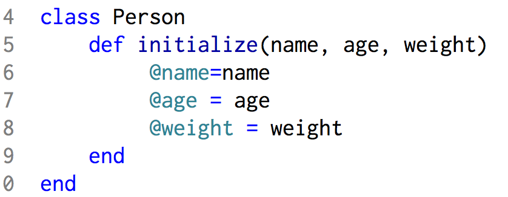
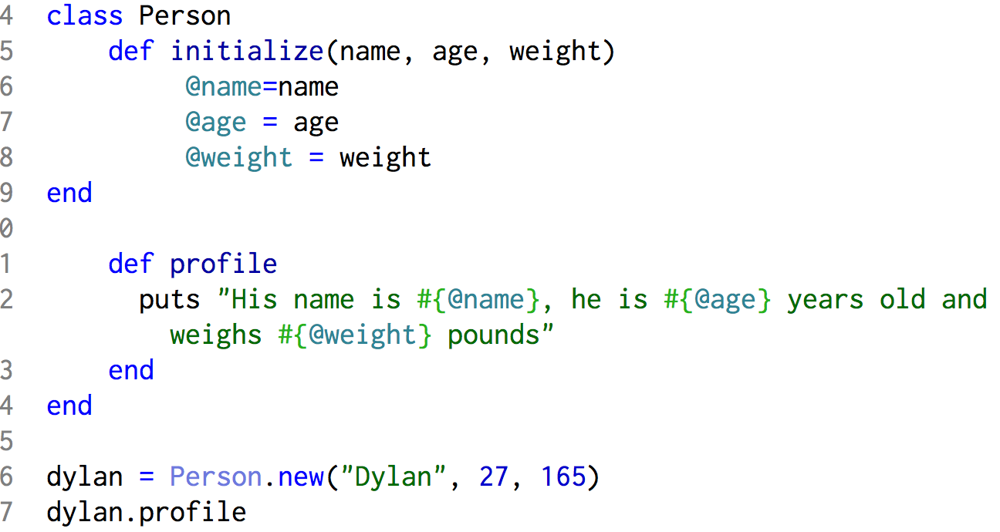

The Power of Classes
May 28, 2015
Classes allow us to group methods together and act as templates for similar objects. Without classes, our code would not be scalable, and processing large amounts of data would be far too labor intensive. For example, if we need to process information about thousands of people, without classes we would have to write methods for each of those people to get their information. The solution to this problem would be creating a person class that runs every person through the same methods. Lets put this into practice.

What I've done here is create a Person class and defined an initialize method within that class. From now on, every new instance of the Person class will run this initialization method. This makes sense, because we will want to know the name, age, and weight of every person. The initialize method is made up of instance variables that are marked with the @ sign. This simply makes them easy to recognize. Instance variables, unlike local variables, can be accessed by any methods that we make in the Person class, and this is very handy. Now lets take it a little further. We're going to add a method to the person class, and then create and new instance of the class.

As you can see, we have added a profile method to the Person class that puts a string to the console that provides a person's information. We also created a new instance of the Person class called "dylan" that passes three parameters to the initialize method. This makes all of the instance variables inside of the initialize method equal the parameters I passed to it. The next thing I did was run the profile method on the dylan class, and that returned a string with the instance variables sprinkled by way of string interpolation. Here's what it outputted.
I hope this helps shed some light on the power of classes. If anything seems off or if you have any comments please let me know.